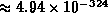
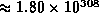
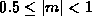
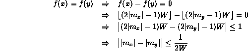
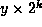

Data Structures and Algorithms
with Object-Oriented Design Patterns in C++
Data Structures and Algorithms
with Object-Oriented Design Patterns in C++Dealing with floating-point number involves only a little more work. In C++ the floating-point data types are float, double and long double. Typically, the size of a float is 4 bytes, the size of a double is 8 bytes, and the size of a long double is 12 or 16 bytes.
We seek a function f which maps a floating-point value
into a non-negative integer.
One possibility is to simply reinterpret the bit pattern
used to represent the floating point number as an integer.
However, this is only possible when the size of the floating-point type
does not exceed the size of unsigned int.
This condition is typically only satisfied by the float type.
Another characteristic of floating-point numbers that must be dealt with is the extremely wide range of values which can be represented. E.g., when using IEEE floating-point, the smallest double precision quantity that can be represented is , and the largest is . Somehow we need to map values in this large domain into the range of an unsigned int.
Every non-zero floating-point quantity x can be written uniquely as
where . The quantity m is called the mantissa or significant and e is called the exponent . This suggests the following definition for the function f:
where  such that w is the word size of the machine.
such that w is the word size of the machine.
This hashing method is best understood by considering
the conditions under which a collision occurs
between two distinct floating-point numbers x and y.
Let  and
and  be the mantissas of x and y, respectively.
The collision occurs when f(x)=f(y).
be the mantissas of x and y, respectively.
The collision occurs when f(x)=f(y).

Thus, x and y collide if the magnitudes of their mantissas differ by less than 1/2W. Notice too that the exponents are not considered at all. Therefore, if x and y collide, then so too do x and  for all permissible values of k.
Program  gives an implementation for the
hash function defined in Equation .
This implementation makes use of
the function frexp
which extracts from a double value
its mantissa m and exponent e by doing
efficient bit manipulations.
Clearly the running time of the Hash function
given in Program is O(1).
gives an implementation for the
hash function defined in Equation .
This implementation makes use of
the function frexp
which extracts from a double value
its mantissa m and exponent e by doing
efficient bit manipulations.
Clearly the running time of the Hash function
given in Program is O(1).

Program: Floating-Point Hash Function Definition
 Copyright © 1997 by Bruno R. Preiss, P.Eng. All rights reserved.
Copyright © 1997 by Bruno R. Preiss, P.Eng. All rights reserved.